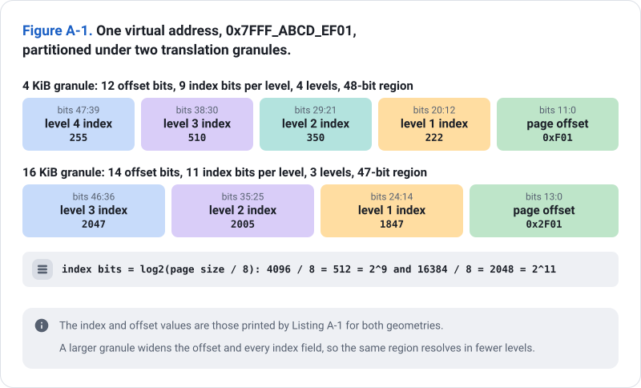
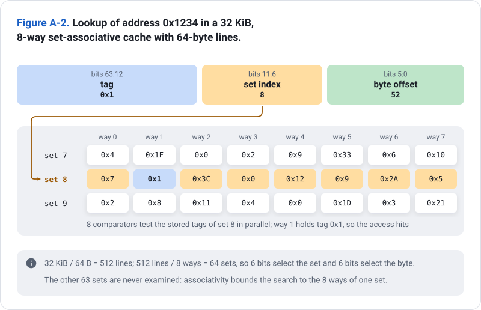
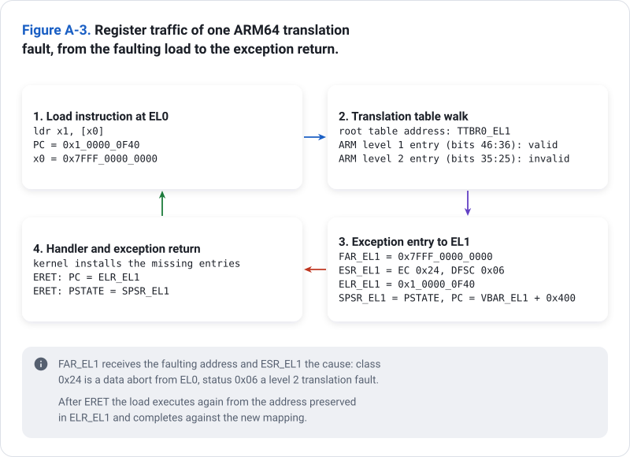

Bonus Additional Chapter: Address Translation Arithmetic, Set-Associative Caches, and the Register File
Every memory reference issued by a running program is resolved by two successive hardware lookups: the translation of a virtual page number into a physical frame number, and the location of the addressed byte within the cache hierarchy. Both lookups are instances of a single operation, the partition of an address into contiguous bit fields that index fixed-size structures whose dimensions are powers of two. The register file supplies the operands of that operation, holds the root address of each lookup structure, and records the cause and location of any fault the lookup raises.
Chapter 7 derived the four-level translation of x86-64 and Chapter 2 introduced the register file and the latency of each cache tier. This chapter consolidates the three subjects into one arithmetic framework. Section A.1 states the bit-field model, Section A.2 applies it to address translation under the 4 KiB and 16 KiB granules, Section A.3 applies it to set-associative caches, and Section A.4 classifies every architecturally visible register by the party obliged to preserve it. Section A.5 closes with worked problems whose numeric answers are confirmed by the listings.
A.1 The Bit-Field Model of an Address
Consider any hardware structure composed of 2k slots, each 2b bytes wide. An address A presented to that structure decomposes into three fields without arithmetic beyond shifting and masking:
offset = A & (2^b - 1) // byte position inside the selected slot
index = (A >> b) & (2^k - 1) // which of the 2^k slots
upper = A >> (b + k) // identity of the block that occupies the slot
Because both dimensions are powers of two, division by the slot size and reduction modulo the slot count degenerate into the selection of wires: the low b wires carry the offset, the next k wires carry the index, and the lookup path contains neither a divider nor an adder. This property is the reason page sizes, cache line sizes, table lengths, and set counts are powers of two on every contemporary architecture. Table A-1 lists the three structures examined in this chapter in terms of the model.
Table A-1. Three hardware structures expressed in the bit-field model.
| Structure | Slot width (2b) | Slot count (2k) | Low field | Middle field | Upper field |
|---|---|---|---|---|---|
| Page frame (4 KiB granule) | 4,096 bytes, b = 12 | Frame chosen by translation | Page offset, bits 11:0 | none | Virtual page number, bits 47:12 |
| Page table node (4 KiB granule) | 8-byte entry, b = 3 | 512 entries, k = 9 | none | 9-bit table index | Indices of the levels above |
| Cache (32 KiB, 8-way, 64-byte lines) | 64-byte line, b = 6 | 64 sets, k = 6 | Byte offset, bits 5:0 | Set index, bits 11:6 | Tag, bits 63:12 |
A.2 Virtual-to-Physical Translation as Arithmetic
A.2.1 The Single-Level Case
Translation replaces the upper field of an address and preserves the low field. With a page of 212 bytes, the low 12 bits of a virtual address are the page offset, the remaining bits form the virtual page number (VPN), and the page table is a function from VPN to physical frame number (PFN). The offset bypasses the table entirely, since a page and its frame have identical size and the byte occupies the same position in both.
VA = 0x1234_5678 (32-bit address, 4 KiB pages)
offset = VA & 0xFFF = 0x678
VPN = VA >> 12 = 0x12345
PFN = table[0x12345] = 0x00ABC (value installed by the kernel)
PA = (PFN << 12) | offset = 0x00AB_C678
A flat table for this 32-bit address space requires one entry per virtual page: 232 / 212 = 220 entries of 4 bytes, or 4 MiB of physical memory for every process irrespective of how few pages the process maps. The same construction over a 48-bit address space with 8-byte entries requires 512 GiB (Section 7.2). The radix tree removes this cost by dividing the VPN into several index fields, so that an unmapped region is represented by one invalid entry in an upper node and consumes no lower nodes.
A.2.2 Deriving the Radix Geometry from the Granule
The shape of the tree follows from two constants: the page size 2p, which the architecture calls the translation granule, and the 8-byte width of a table entry. Each table node occupies exactly one page so that the kernel allocates nodes from the same frame allocator as data, which fixes the number of entries per node and therefore the width of every index field:
entries per node = 2^p / 8 = 2^(p - 3)
index bits = p - 3
levels = ceil((region bits - p) / (p - 3))
span of one entry at level n = 2^(p + (n - 1)(p - 3)) bytes (leaf level: n = 1)
Table A-2. Radix geometry of the three ARM64 translation granules; the 4 KiB row also describes x86-64.
| Granule | Offset bits | Index bits per level | Levels for the stated region | Span of a level 1 entry | Span of a level 2 entry | Span of a level 3 entry |
|---|---|---|---|---|---|---|
| 4 KiB | 12 | 9 | 4 levels, 48-bit region | 4 KiB | 2 MiB | 1 GiB |
| 16 KiB | 14 | 11 | 3 levels, 47-bit region | 16 KiB | 32 MiB | 64 GiB |
| 64 KiB | 16 | 13 | 2 levels, 42-bit region | 64 KiB | 512 MiB | 4 TiB |
The span column explains the huge-page sizes of Section 7.2.3: a walk that terminates one level early maps the entire span of that entry with a single translation, which yields 2 MiB blocks under the 4 KiB granule and 32 MiB blocks under the 16 KiB granule. The granule likewise scales the reach of the Translation Lookaside Buffer (TLB). The 1,536-entry second-level TLB of Section 7.2.3 covers 6 MiB with 4 KiB pages and 24 MiB with 16 KiB pages, a fourfold increase obtained without any change to the TLB itself.
Apple silicon is the principal deployment of the 16 KiB granule. In its large-memory configuration the XNU kernel assigns user space a 47-bit region, which the 16 KiB granule resolves in three levels (11 + 11 + 11 + 14 = 47), one memory reference fewer per TLB miss than the four-level walk of Chapter 7. Figure A-1 partitions one address under both granules.

The two architectures number the levels in opposite directions. The x86-64 convention, followed by Figure A-1 and by the listings below, counts downward to the leaf, so the leaf table is always level 1. The ARM64 convention counts upward from the root and fixes the leaf at level 3, so the three-level walk of the 16 KiB granule traverses ARM levels 1, 2, and 3 in that order. The distinction matters when a fault is decoded, because the ARM64 fault status code reports the level in the ARM64 numbering (Section A.4.3).
A.2.3 A Software Model of the Walk
Listings A-1 and A-2 implement the walk for an arbitrary granule. Simulated physical memory is a vector of frames, each entry stores the physical address of the next node with bit 0 as the valid flag, and the Geometry type derives the index width and the region size from the page shift exactly as Section A.2.2 prescribes. The program maps the page containing 0x7FFF_ABCD_EF01 under both granules, translates that address, and then translates an address for which no mapping exists.
Listing A-1. A page-table walk parameterized by the translation granule (C++20).
// appa/page_walk.cpp: a software model of the hardware page-table walk.
// One radix tree is built in simulated physical memory for each translation
// granule, and the walk prints the index and entry address used at each level.
#include <cinttypes>
#include <cstdint>
#include <cstdio>
#include <optional>
#include <vector>
constexpr uint64_t kEntryBytes = 8;
constexpr uint64_t kValid = 1;
constexpr uint64_t kPhysicalBase = 0x1000'0000;
struct Geometry {
unsigned page_shift; // log2 of the page size
unsigned levels; // table levels between the root register and the frame
uint64_t page_size() const { return uint64_t{1} << page_shift; }
unsigned index_bits() const { return page_shift - 3; } // 8-byte entries
unsigned region_bits() const { return page_shift + levels * index_bits(); }
uint64_t index_at(uint64_t address, unsigned level) const {
unsigned shift = page_shift + (level - 1) * index_bits();
uint64_t mask = (uint64_t{1} << index_bits()) - 1;
return (address >> shift) & mask;
}
};
class AddressSpace {
public:
explicit AddressSpace(Geometry geometry) : geometry_(geometry) { root_ = allocate_frame(); }
// Installs the translation for the page that contains `address`.
uint64_t map(uint64_t address) {
uint64_t table = root_;
for (unsigned level = geometry_.levels; level > 1; --level) {
uint64_t& entry = entry_at(table, geometry_.index_at(address, level));
if ((entry & kValid) == 0) {
entry = allocate_frame() | kValid;
}
table = entry & ~kValid;
}
uint64_t frame = allocate_frame();
entry_at(table, geometry_.index_at(address, 1)) = frame | kValid;
return frame;
}
// Performs the walk the memory management unit performs on a TLB miss.
std::optional<uint64_t> translate(uint64_t address) const {
uint64_t table = root_;
for (unsigned level = geometry_.levels; level >= 1; --level) {
uint64_t index = geometry_.index_at(address, level);
uint64_t entry = frames_[frame_number(table)][index];
uint64_t entry_address = table + index * kEntryBytes;
if ((entry & kValid) == 0) {
printf(" level %u: index %4" PRIu64 ", entry at 0x%" PRIx64 " is invalid: translation fault\n",
level, index, entry_address);
return std::nullopt;
}
table = entry & ~kValid;
printf(" level %u: index %4" PRIu64 ", entry at 0x%" PRIx64 " -> 0x%" PRIx64 "\n",
level, index, entry_address, table);
}
uint64_t offset = address & (geometry_.page_size() - 1);
printf(" offset 0x%" PRIx64 " joins frame 0x%" PRIx64 "\n", offset, table);
return table | offset;
}
uint64_t root() const { return root_; }
private:
uint64_t frame_number(uint64_t physical) const {
return (physical - kPhysicalBase) >> geometry_.page_shift;
}
uint64_t& entry_at(uint64_t table, uint64_t index) { return frames_[frame_number(table)][index]; }
// Hands out the next zero-filled frame of simulated physical memory.
uint64_t allocate_frame() {
uint64_t physical = kPhysicalBase + (frames_.size() << geometry_.page_shift);
frames_.emplace_back(geometry_.page_size() / kEntryBytes, 0);
return physical;
}
Geometry geometry_;
std::vector<std::vector<uint64_t>> frames_;
uint64_t root_ = 0;
};
void report(const char* label, uint64_t address, const AddressSpace& space) {
printf("translate 0x%012" PRIx64 " (%s)\n", address, label);
std::optional<uint64_t> physical = space.translate(address);
if (physical.has_value()) {
printf(" physical address 0x%" PRIx64 "\n", *physical);
}
}
void demonstrate(Geometry geometry) {
constexpr uint64_t kMapped = 0x7FFF'ABCD'EF01;
constexpr uint64_t kUnmapped = 0x7FFF'0000'0000;
AddressSpace space(geometry);
space.map(kMapped);
printf("%" PRIu64 " KiB pages: %u levels, %u index bits per level, %u-bit region, root table at 0x%" PRIx64 "\n",
geometry.page_size() / 1024, geometry.levels, geometry.index_bits(), geometry.region_bits(),
space.root());
report("mapped", kMapped, space);
report("unmapped", kUnmapped, space);
printf("\n");
}
int main() {
demonstrate(Geometry{12, 4}); // x86-64 and ARM64 with a 4 KiB granule
demonstrate(Geometry{14, 3}); // ARM64 with a 16 KiB granule and a 47-bit region
}
Output A-1. Index, entry address, and result at each level for both granules.
4 KiB pages: 4 levels, 9 index bits per level, 48-bit region, root table at 0x10000000
translate 0x7fffabcdef01 (mapped)
level 4: index 255, entry at 0x100007f8 -> 0x10001000
level 3: index 510, entry at 0x10001ff0 -> 0x10002000
level 2: index 350, entry at 0x10002af0 -> 0x10003000
level 1: index 222, entry at 0x100036f0 -> 0x10004000
offset 0xf01 joins frame 0x10004000
physical address 0x10004f01
translate 0x7fff00000000 (unmapped)
level 4: index 255, entry at 0x100007f8 -> 0x10001000
level 3: index 508, entry at 0x10001fe0 is invalid: translation fault
16 KiB pages: 3 levels, 11 index bits per level, 47-bit region, root table at 0x10000000
translate 0x7fffabcdef01 (mapped)
level 3: index 2047, entry at 0x10003ff8 -> 0x10004000
level 2: index 2005, entry at 0x10007ea8 -> 0x10008000
level 1: index 1847, entry at 0x1000b9b8 -> 0x1000c000
offset 0x2f01 joins frame 0x1000c000
physical address 0x1000ef01
translate 0x7fff00000000 (unmapped)
level 3: index 2047, entry at 0x10003ff8 -> 0x10004000
level 2: index 1920, entry at 0x10007c00 is invalid: translation fault
Listing A-2. The same parameterized walk in Rust.
// appa/page_walk.rs: a software model of the hardware page-table walk.
// One radix tree is built in simulated physical memory for each translation
// granule, and the walk prints the index and entry address used at each level.
const ENTRY_BYTES: u64 = 8;
const VALID: u64 = 1;
const PHYSICAL_BASE: u64 = 0x1000_0000;
#[derive(Clone, Copy)]
struct Geometry {
page_shift: u32, // log2 of the page size
levels: u32, // table levels between the root register and the frame
}
impl Geometry {
fn page_size(self) -> u64 {
1 << self.page_shift
}
// Entries are 8 bytes wide, so one table holds page_size / 8 of them.
fn index_bits(self) -> u32 {
self.page_shift - 3
}
fn region_bits(self) -> u32 {
self.page_shift + self.levels * self.index_bits()
}
fn index_at(self, address: u64, level: u32) -> usize {
let shift = self.page_shift + (level - 1) * self.index_bits();
let mask = (1u64 << self.index_bits()) - 1;
((address >> shift) & mask) as usize
}
}
struct AddressSpace {
geometry: Geometry,
frames: Vec<Vec<u64>>,
root: u64,
}
impl AddressSpace {
fn new(geometry: Geometry) -> Self {
let mut space = Self {
geometry,
frames: Vec::new(),
root: 0,
};
space.root = space.allocate_frame();
space
}
fn frame_number(&self, physical: u64) -> usize {
((physical - PHYSICAL_BASE) >> self.geometry.page_shift) as usize
}
// Hands out the next zero-filled frame of simulated physical memory.
fn allocate_frame(&mut self) -> u64 {
let physical = PHYSICAL_BASE + ((self.frames.len() as u64) << self.geometry.page_shift);
let entries = (self.geometry.page_size() / ENTRY_BYTES) as usize;
self.frames.push(vec![0; entries]);
physical
}
// Installs the translation for the page that contains `address`.
fn map(&mut self, address: u64) -> u64 {
let mut table = self.root;
for level in (2..=self.geometry.levels).rev() {
let index = self.geometry.index_at(address, level);
let number = self.frame_number(table);
if self.frames[number][index] & VALID == 0 {
self.frames[number][index] = self.allocate_frame() | VALID;
}
table = self.frames[number][index] & !VALID;
}
let frame = self.allocate_frame();
let number = self.frame_number(table);
self.frames[number][self.geometry.index_at(address, 1)] = frame | VALID;
frame
}
// Performs the walk the memory management unit performs on a TLB miss.
fn translate(&self, address: u64) -> Option<u64> {
let mut table = self.root;
for level in (1..=self.geometry.levels).rev() {
let index = self.geometry.index_at(address, level);
let entry = self.frames[self.frame_number(table)][index];
let entry_address = table + index as u64 * ENTRY_BYTES;
if entry & VALID == 0 {
println!(
" level {level}: index {index:4}, entry at {entry_address:#x} is invalid: translation fault"
);
return None;
}
table = entry & !VALID;
println!(" level {level}: index {index:4}, entry at {entry_address:#x} -> {table:#x}");
}
let offset = address & (self.geometry.page_size() - 1);
println!(" offset {offset:#x} joins frame {table:#x}");
Some(table | offset)
}
}
fn report(label: &str, address: u64, space: &AddressSpace) {
println!("translate 0x{address:012x} ({label})");
if let Some(physical) = space.translate(address) {
println!(" physical address {physical:#x}");
}
}
fn demonstrate(geometry: Geometry) {
const MAPPED: u64 = 0x7FFF_ABCD_EF01;
const UNMAPPED: u64 = 0x7FFF_0000_0000;
let mut space = AddressSpace::new(geometry);
space.map(MAPPED);
println!(
"{} KiB pages: {} levels, {} index bits per level, {}-bit region, root table at {:#x}",
geometry.page_size() / 1024,
geometry.levels,
geometry.index_bits(),
geometry.region_bits(),
space.root
);
report("mapped", MAPPED, &space);
report("unmapped", UNMAPPED, &space);
println!();
}
fn main() {
demonstrate(Geometry { page_shift: 12, levels: 4 }); // x86-64 and ARM64 with a 4 KiB granule
demonstrate(Geometry { page_shift: 14, levels: 3 }); // ARM64 with a 16 KiB granule and a 47-bit region
}Output A-2.
4 KiB pages: 4 levels, 9 index bits per level, 48-bit region, root table at 0x10000000
translate 0x7fffabcdef01 (mapped)
level 4: index 255, entry at 0x100007f8 -> 0x10001000
level 3: index 510, entry at 0x10001ff0 -> 0x10002000
level 2: index 350, entry at 0x10002af0 -> 0x10003000
level 1: index 222, entry at 0x100036f0 -> 0x10004000
offset 0xf01 joins frame 0x10004000
physical address 0x10004f01
translate 0x7fff00000000 (unmapped)
level 4: index 255, entry at 0x100007f8 -> 0x10001000
level 3: index 508, entry at 0x10001fe0 is invalid: translation fault
16 KiB pages: 3 levels, 11 index bits per level, 47-bit region, root table at 0x10000000
translate 0x7fffabcdef01 (mapped)
level 3: index 2047, entry at 0x10003ff8 -> 0x10004000
level 2: index 2005, entry at 0x10007ea8 -> 0x10008000
level 1: index 1847, entry at 0x1000b9b8 -> 0x1000c000
offset 0x2f01 joins frame 0x1000c000
physical address 0x1000ef01
translate 0x7fff00000000 (unmapped)
level 3: index 2047, entry at 0x10003ff8 -> 0x10004000
level 2: index 1920, entry at 0x10007c00 is invalid: translation fault
Three properties of the hardware walk are visible in the output. First, the address of every entry is the node base plus the index multiplied by 8, the rule applied by hand in Section 7.2.2; under the 4 KiB granule the indices are 255, 510, 350, and 222. Second, the tree is sparse: mapping one page consumed four table nodes under the 4 KiB granule (16 KiB of tables at 0x1000_0000 through 0x1000_3000) and three nodes under the 16 KiB granule (48 KiB of tables), whereas a flat table over the 48-bit region would occupy 512 GiB. Third, the walk for the unmapped address terminates at the first invalid entry. It shares the root entry with the mapped address, finds no node beneath it, and reports the level at which translation failed; the hardware delivers the same information to the kernel through the fault registers of Section A.4.3.
A.3 Set-Associative Caches
A.3.1 Cache Geometry and the Lookup Procedure
A cache stores fixed-size lines and is described completely by three parameters: capacity C, line size B, and associativity W. The lines are grouped into S sets of W lines each, and each of the W positions within a set is called a way. The parameters satisfy one identity, from which the address partition follows by the model of Section A.1:
C = S × W × B sets: S = C / (W × B)
offset bits = log2(B) index bits = log2(S)
tag bits = address bits - index bits - offset bits
For the 32 KiB, 8-way first-level data cache with 64-byte lines that x86-64 processors employed for more than a decade, the cache holds 32,768 / 64 = 512 lines in 512 / 8 = 64 sets, so 6 bits select the byte within a line, 6 bits select the set, and all remaining bits form the tag. The address 0x1234 therefore decomposes as follows, and Figure A-2 traces its lookup.
offset = 0x1234 & 0x3F = 52
index = (0x1234 >> 6) & 0x3F = 8
tag = 0x1234 >> 12 = 0x1
check: 0x1 × 4096 + 8 × 64 + 52 = 4660 = 0x1234

The lookup proceeds in four steps:
- Set selection: The index bits address the tag array and the data array, reading the
Wstored tags and theWlines of exactly one set. - Parallel tag comparison:
Wcomparators test the tag of the address against the stored tags, each qualified by the valid bit of its way. - Hit: The matching comparator steers a multiplexer that selects one of the
Wlines, and the offset bits select the requested bytes within that line. - Miss: The line is requested from the next cache level. Upon arrival, the replacement policy designates one of the
Wways of the set as the victim. Hardware approximates least-recently-used (LRU) ordering with a small number of state bits per set (a binary tree ofW− 1 bits in the pseudo-LRU scheme), since an exact ordering of 8 ways requires 16 bits per set and wider update logic on every access.
An address may therefore reside in exactly one set and in any of the W ways of that set. The term W-way set-associative states precisely this: the set is determined by the address, and the way within the set is chosen by the replacement policy.
A.3.2 The Associativity Spectrum and the Classification of Misses
Holding capacity and line size constant, associativity trades the number of sets against the number of candidate positions for each line. Table A-3 lists the three points of the spectrum for a 32 KiB cache of 512 lines.
Table A-3. Three organizations of one 32 KiB cache with 64-byte lines.
| Organization | Ways | Sets | Index bits | Comparators per lookup | Characteristic cost |
|---|---|---|---|---|---|
| Direct-mapped | 1 | 512 | 9 | 1 | Two live lines with equal index bits evict each other on every alternation |
| 8-way set-associative | 8 | 64 | 6 | 8 | Eight comparators and an 8-input multiplexer on the load path |
| Fully associative | 512 | 1 | 0 | 512 | A content-addressable memory whose area and power grow with every entry |
Associativity addresses one specific class of miss. The standard classification distinguishes three causes:
- Compulsory miss: The first reference to a line, which no cache organization can avoid without prefetching.
- Capacity miss: A reference to a line evicted because the working set exceeds
C; a fully associative cache of equal capacity would miss as well. - Conflict miss: A reference to a line evicted although the cache as a whole has free or colder lines, because more than
Wlive lines select the same set. A fully associative cache of equal capacity would hit.
A.3.3 Separating the Three Miss Classes by Simulation
Listings A-3 and A-4 model a cache as a vector of sets, each an ordered list of tags from most to least recently used, so that LRU replacement is exact and the victim is always the last element. Three traces of 4,096 accesses each isolate the three miss classes: four passes over a 16 KiB buffer, four passes over a 64 KiB buffer, and 1,024 rounds over four addresses spaced exactly one cache capacity apart. The spacing gives the four addresses identical index bits under every geometry of Table A-3.
Listing A-3. A set-associative cache model with exact LRU replacement (C++20).
// appa/cache_sim.cpp: a set-associative cache model with LRU replacement.
// Three address traces separate compulsory, capacity, and conflict misses
// across five associativities of one 32 KiB cache.
#include <algorithm>
#include <bit>
#include <cstdint>
#include <cstdio>
#include <vector>
constexpr uint64_t kCapacity = 32 * 1024;
constexpr uint64_t kLineBytes = 64;
class Cache {
public:
Cache(uint64_t capacity, uint64_t line_bytes, uint64_t ways)
: ways_(ways),
sets_(capacity / (line_bytes * ways)),
offset_bits_(std::countr_zero(line_bytes)),
index_bits_(std::countr_zero(sets_)),
lines_(sets_) {}
// Returns true on a hit. Each set keeps its tags ordered from most to
// least recently used, so the victim is always the last element.
bool access(uint64_t address) {
uint64_t set = (address >> offset_bits_) & (sets_ - 1);
uint64_t tag = address >> (offset_bits_ + index_bits_);
std::vector<uint64_t>& tags = lines_[set];
auto position = std::find(tags.begin(), tags.end(), tag);
bool hit = position != tags.end();
if (hit) {
tags.erase(position);
} else if (tags.size() == ways_) {
tags.pop_back();
}
tags.insert(tags.begin(), tag);
return hit;
}
uint64_t sets() const { return sets_; }
int offset_bits() const { return offset_bits_; }
int index_bits() const { return index_bits_; }
private:
uint64_t ways_;
uint64_t sets_;
int offset_bits_;
int index_bits_;
std::vector<std::vector<uint64_t>> lines_;
};
// Reads every line of a buffer in address order, `passes` times.
std::vector<uint64_t> sweep(uint64_t buffer_bytes, int passes) {
std::vector<uint64_t> trace;
for (int pass = 0; pass < passes; ++pass) {
for (uint64_t address = 0; address < buffer_bytes; address += kLineBytes) {
trace.push_back(address);
}
}
return trace;
}
// Cycles through `count` addresses that are one cache capacity apart, so all
// of them select the same set in every geometry.
std::vector<uint64_t> aliases(uint64_t count, int rounds) {
std::vector<uint64_t> trace;
for (int round = 0; round < rounds; ++round) {
for (uint64_t line = 0; line < count; ++line) {
trace.push_back(line * kCapacity);
}
}
return trace;
}
uint64_t misses(uint64_t ways, const std::vector<uint64_t>& trace) {
Cache cache(kCapacity, kLineBytes, ways);
uint64_t count = 0;
for (uint64_t address : trace) {
if (!cache.access(address)) {
++count;
}
}
return count;
}
int main() {
const std::vector<uint64_t> small_sweep = sweep(16 * 1024, 4);
const std::vector<uint64_t> large_sweep = sweep(64 * 1024, 4);
const std::vector<uint64_t> four_aliases = aliases(4, 1024);
printf("32 KiB cache, 64-byte lines; each trace issues 4096 accesses\n");
printf("ways sets offset index 16 KiB sweep 64 KiB sweep 4 aliases\n");
for (uint64_t ways : {1, 2, 4, 8, 512}) {
Cache shape(kCapacity, kLineBytes, ways);
printf("%4llu %4llu %6d %5d %12llu %12llu %9llu\n",
static_cast<unsigned long long>(ways),
static_cast<unsigned long long>(shape.sets()),
shape.offset_bits(), shape.index_bits(),
static_cast<unsigned long long>(misses(ways, small_sweep)),
static_cast<unsigned long long>(misses(ways, large_sweep)),
static_cast<unsigned long long>(misses(ways, four_aliases)));
}
}
Output A-3. Miss counts of three traces across five associativities.
32 KiB cache, 64-byte lines; each trace issues 4096 accesses
ways sets offset index 16 KiB sweep 64 KiB sweep 4 aliases
1 512 6 9 256 4096 4096
2 256 6 8 256 4096 4096
4 128 6 7 256 4096 4
8 64 6 6 256 4096 4
512 1 6 0 256 4096 4
Listing A-4. The same cache model in Rust.
// appa/cache_sim.rs: a set-associative cache model with LRU replacement.
// Three address traces separate compulsory, capacity, and conflict misses
// across five associativities of one 32 KiB cache.
const CAPACITY: u64 = 32 * 1024;
const LINE_BYTES: u64 = 64;
struct Cache {
ways: usize,
sets: u64,
offset_bits: u32,
index_bits: u32,
lines: Vec<Vec<u64>>,
}
impl Cache {
fn new(capacity: u64, line_bytes: u64, ways: u64) -> Self {
let sets = capacity / (line_bytes * ways);
Self {
ways: ways as usize,
sets,
offset_bits: line_bytes.trailing_zeros(),
index_bits: sets.trailing_zeros(),
lines: vec![Vec::new(); sets as usize],
}
}
// Returns true on a hit. Each set keeps its tags ordered from most to
// least recently used, so the victim is always the last element.
fn access(&mut self, address: u64) -> bool {
let set = (address >> self.offset_bits) & (self.sets - 1);
let tag = address >> (self.offset_bits + self.index_bits);
let tags = &mut self.lines[set as usize];
let position = tags.iter().position(|&stored| stored == tag);
match position {
Some(found) => {
tags.remove(found);
}
None if tags.len() == self.ways => {
tags.pop();
}
None => {}
}
tags.insert(0, tag);
position.is_some()
}
}
// Reads every line of a buffer in address order, `passes` times.
fn sweep(buffer_bytes: u64, passes: u32) -> Vec<u64> {
let lines = buffer_bytes / LINE_BYTES;
(0..passes)
.flat_map(|_| (0..lines).map(|line| line * LINE_BYTES))
.collect()
}
// Cycles through `count` addresses that are one cache capacity apart, so all
// of them select the same set in every geometry.
fn aliases(count: u64, rounds: u32) -> Vec<u64> {
(0..rounds)
.flat_map(|_| (0..count).map(|line| line * CAPACITY))
.collect()
}
fn misses(ways: u64, trace: &[u64]) -> usize {
let mut cache = Cache::new(CAPACITY, LINE_BYTES, ways);
trace.iter().filter(|&&address| !cache.access(address)).count()
}
fn main() {
let small_sweep = sweep(16 * 1024, 4);
let large_sweep = sweep(64 * 1024, 4);
let four_aliases = aliases(4, 1024);
println!("32 KiB cache, 64-byte lines; each trace issues 4096 accesses");
println!("ways sets offset index 16 KiB sweep 64 KiB sweep 4 aliases");
for ways in [1, 2, 4, 8, 512] {
let shape = Cache::new(CAPACITY, LINE_BYTES, ways);
println!(
"{:4} {:4} {:6} {:5} {:12} {:12} {:9}",
ways,
shape.sets,
shape.offset_bits,
shape.index_bits,
misses(ways, &small_sweep),
misses(ways, &large_sweep),
misses(ways, &four_aliases)
);
}
}Output A-4.
32 KiB cache, 64-byte lines; each trace issues 4096 accesses
ways sets offset index 16 KiB sweep 64 KiB sweep 4 aliases
1 512 6 9 256 4096 4096
2 256 6 8 256 4096 4096
4 128 6 7 256 4096 4
8 64 6 6 256 4096 4
512 1 6 0 256 4096 4
Each column of the output exhibits one class in isolation. The 16 KiB sweep incurs 256 misses under every organization: the buffer comprises 256 lines, each is fetched once, and the remaining three passes hit, so these misses are compulsory. The 64 KiB sweep misses on all 4,096 accesses under every organization, since its 1,024 lines exceed the 512 the cache holds and each line has been evicted before the next pass returns to it; these are capacity misses, and associativity cannot reduce them. The alias trace separates the organizations. Its working set is four lines, 256 bytes in a 32 KiB cache, yet it misses on every access with 1 or 2 ways and misses only 4 times with 4 or more. Four live lines compete for one set, and under cyclic access with LRU replacement a set of fewer than four ways always evicts the line that will be requested soonest.
A.3.4 Reading the Geometry of a Real Processor
The kernel exports the geometry of each cache level. On Linux the values appear under /sys/devices/system/cpu/cpu0/cache/index*/ in the files size, ways_of_associativity, number_of_sets, and coherency_line_size; on macOS the corresponding values are reported by sysctl hw.cachelinesize hw.l1dcachesize hw.l2cachesize. Table A-4 records the values read from an ARM64 Linux host with Cortex-A78AE cores and 4 KiB pages, together with the fields derived from them. In every row the product of sets, ways, and line size reproduces the reported capacity.
Table A-4. Cache geometry reported by sysfs on a Cortex-A78AE host, with the derived address fields.
| Level | Capacity | Ways | Sets | Line size | Offset bits | Index bits | Way size (sets × line) |
|---|---|---|---|---|---|---|---|
| L1 data | 64 KiB | 4 | 256 | 64 bytes | 5:0 | 13:6 | 16 KiB |
| L1 instruction | 64 KiB | 4 | 256 | 64 bytes | 5:0 | 13:6 | 16 KiB |
| L2 (private) | 256 KiB | 8 | 512 | 64 bytes | 5:0 | 14:6 | 32 KiB |
| L3 (shared) | 2 MiB | 16 | 2,048 | 64 bytes | 5:0 | 16:6 | 128 KiB |
A.3.5 The Coupling between Page Size and First-Level Cache Geometry
The way size, the product of the set count and the line size, links the cache to the translation granule. A first-level cache must begin its lookup before the TLB has produced the physical frame number, since serializing the two lookups would add the TLB latency to every load. The cache therefore selects the set with bits of the virtual address while the TLB translates the page number in parallel, and compares the stored tags against the physical frame number once the TLB delivers it. This arrangement is termed virtually indexed, physically tagged (VIPT).
The arrangement is correct without further hardware only if every index bit lies within the page offset, the field that translation leaves unchanged. The index and offset fields together span log2(way size) bits, which yields a bound on the capacity of the cache:
way size = S × B must not exceed page size therefore C must not exceed W × page size
The bound accounts for the first-level geometries that processors ship. With 4 KiB pages, an 8-way cache is limited to 32 KiB, the configuration analyzed in Section A.3.1. When x86-64 designs enlarged the first-level data cache to 48 KiB, they raised the associativity to 12 and retained 64 sets, because the set count could not grow without index bits crossing the page boundary. The 16 KiB granule raises the bound fourfold: the 128 KiB first-level data cache reported for the performance cores of the Apple M1 is consistent with 8 ways of 16 KiB each.
A design that exceeds the bound accepts an additional obligation. In Table A-4 the way size of the L1 caches is 16 KiB under 4 KiB pages, so index bits 13:12 belong to the virtual page number. Two virtual pages mapped to one physical frame may then select different sets and hold two inconsistent copies of one line, a condition termed a synonym or cache alias, which the processor must detect or prevent in hardware.
A.3.6 Consequences for Systems Software
Three software-visible effects follow from the geometry. First, memory accessed at a stride equal to a multiple of the way size reproduces the alias trace of Section A.3.3; column traversal of a matrix whose row length in bytes is a large power of two is the canonical instance, and it degrades throughput although the working set is far below the cache capacity. Second, the line is the unit of both storage and coherence, so two unrelated variables within one 64-byte line are transferred between cores together; Section 17.2 measures the resulting false sharing. Third, every node read by the page-table walk of Section A.2 is itself a memory reference served by the data caches, so a TLB miss whose table nodes are cached costs a few nanoseconds, whereas the same miss with uncached nodes costs several main-memory accesses.
A.4 The Register File, Classified by Preservation Contract
Table 2-1 classified registers by function. A second classification is more useful when reasoning about kernels and calling conventions: for each event that transfers control, which party must preserve which registers, and where the preserved values are stored. Three events exist (the procedure call, the exception, and the context switch), and each carries a distinct contract.
A.4.1 The Procedure-Call Contract
The Application Binary Interface (ABI) assigns every general-purpose register a role and a preservation class. A caller-saved register may be overwritten by any callee, so a caller that requires its value after the call must store it beforehand. A callee-saved register must hold the same value on return as on entry, so a callee that uses it must store and restore it. Tables A-5 and A-6 give the complete assignment for both architectures.
Table A-5. General-purpose register roles under the ARM64 Procedure Call Standard (AAPCS64).
| Registers | Role | Preserved across a call |
|---|---|---|
x0 through x7 | Integer and pointer arguments; x0 carries the return value | No |
x8 | Address of a caller-allocated result too large for registers; system call number on Linux | No |
x9 through x15 | Temporaries | No |
x16, x17 | Intra-procedure-call scratch registers used by linker veneers; x16 carries the system call number on XNU | No |
x18 | Platform register, reserved by the operating system on Apple platforms | Reserved |
x19 through x28 | Long-lived local values | Yes |
x29 (FP) | Frame pointer, the address of the current frame record | Yes |
x30 (LR) | Link register, written with the return address by BL | Saved by any function that itself calls |
SP | Stack pointer, aligned to 16 bytes | Yes |
v0 through v7 | Floating-point and vector arguments and results | No |
v8 through v15 | Floating-point local values (low 64 bits only) | Yes |
Table A-6. General-purpose register roles under the System V AMD64 ABI.
| Registers | Role | Preserved across a call |
|---|---|---|
RDI, RSI, RDX, RCX, R8, R9 | First six integer and pointer arguments | No |
RAX | Return value; system call number on Linux | No |
R10, R11 | Temporaries; R10 replaces RCX as the fourth system call argument, since SYSCALL overwrites RCX with the return address and R11 with RFLAGS | No |
RBX, R12 through R15 | Long-lived local values | Yes |
RBP | Frame pointer | Yes |
RSP | Stack pointer, aligned to 16 bytes at each call | Yes |
XMM0 through XMM7 | Floating-point arguments; XMM0 carries the return value | No |
The contract is observable in compiler output. The following function calls scale and afterwards requires its own second argument, which arrived in the caller-saved register x1.
long scale(long value);
long accumulate(long first, long second) {
long scaled = scale(first);
return scaled + second;
}
Disassembly A-1. Clang 15 output for accumulate on ARM64 (-O1, frame pointer retained).
0: stp x29, x30, [sp, #-32]! // allocate 32 bytes; store FP and LR as the frame record
4: str x19, [sp, #16] // preserve the caller's x19 before using it
8: mov x29, sp // FP now addresses this function's frame record
c: mov x19, x1 // move `second` into a register that `scale` must preserve
10: bl scale // LR = 0x14; x0 still holds `first`, the sole argument
14: add x0, x0, x19 // return value = scale(first) + second
18: ldr x19, [sp, #16] // restore the caller's x19
1c: ldp x29, x30, [sp], #32 // restore FP and LR; release the 32 bytes
20: ret // branch to the address held in LR
Each instruction discharges one clause of Table A-5. The value second is moved from x1 to x19 because scale is entitled to overwrite x1 and obliged to preserve x19; the function must first store the previous content of x19, since its own caller relies on the same guarantee. The bl instruction overwrites x30, so a function that performs a call must store the link register on entry, whereas a leaf function may return through x30 without touching memory. The frame occupies 32 bytes although only 24 are used, in compliance with the 16-byte stack alignment rule. The pair stored at the base of the frame, the caller’s x29 followed by the return address, constitutes the frame record; because each x29 addresses the record of the enclosing frame, a debugger or sampling profiler reconstructs the call stack by following this chain (Section 2.1).
A.4.2 System Registers of Translation and Exception Handling
A second population of registers is inaccessible to user-mode code and configures the mechanisms of Sections A.2 and 2.4. Table A-7 pairs each ARM64 system register with its x86-64 counterpart.
Table A-7. System registers governing address translation, exception entry, and thread identity.
| Role | ARM64 | x86-64 |
|---|---|---|
| Root of the user-space translation tree | TTBR0_EL1 | CR3 |
| Root of the kernel-space translation tree | TTBR1_EL1 | Upper half of the tree addressed by CR3 |
| Granule and region size configuration | TCR_EL1 (fields TG0, T0SZ) | CR4 and EFER |
| Address-space tag for TLB entries | ASID, bits 63:48 of TTBR0_EL1 | PCID, bits 11:0 of CR3 |
| Faulting virtual address | FAR_EL1 | CR2 |
| Cause of the exception | ESR_EL1 (class in bits 31:26, fault status in bits 5:0) | Error code pushed onto the kernel stack |
| Interrupted program counter | ELR_EL1 | RIP in the frame pushed by the processor |
| Interrupted processor status | SPSR_EL1 | RFLAGS in the frame pushed by the processor |
| Kernel stack pointer | SP_EL1 | TSS.rsp0 |
| Location of the exception vectors | VBAR_EL1 | IDTR; LSTAR for SYSCALL |
| User-mode thread pointer for thread-local storage | TPIDR_EL0 | FS base |
A.4.3 The Registers of One Translation Fault
A single page fault exercises nearly every row of Table A-7 and joins the translation arithmetic of Section A.2 to the register file. Figure A-3 follows a user-mode load from the unmapped address 0x7FFF_0000_0000, the address for which Listing A-1 reported a fault, on an ARM64 system with the 16 KiB granule.

- Load at EL0: The instruction
ldr x1, [x0]presents the content ofx0as a virtual address. The TLB holds no entry for the page. - Table walk: The walker reads the root address from
TTBR0_EL1and indexes the root node with bits46:36. The entry is valid. The entry selected by bits35:25in the next node is invalid, as in Output A-1, and the walk stops. - Exception entry: The processor writes the faulting address into
FAR_EL1, the interrupted program counter intoELR_EL1, and the interrupted processor state intoSPSR_EL1. It encodes the cause inESR_EL1: exception class0x24denotes a data abort taken from EL0, and fault status0x06denotes a translation fault at ARM level 2, the second node of the three-level walk. The processor then masks interrupts, selectsSP_EL1, and loads the program counter withVBAR_EL1 + 0x400, the vector for synchronous exceptions from a lower exception level. - Handler and return: The kernel reads
FAR_EL1andESR_EL1, locates the virtual memory area containing the address, allocates the missing table nodes and a frame, and executesERET. That instruction restores the program counter fromELR_EL1and the processor state fromSPSR_EL1, the load executes a second time, and the walk now succeeds.
The x86-64 sequence differs in storage and agrees in content. The processor writes the faulting address into CR2, switches to the stack named by TSS.rsp0, and pushes SS, RSP, RFLAGS, CS, RIP, and an error code whose value for this fault is 0x4: the page was absent, the access was a read, and the access originated in user mode (Section 2.4.2).
A.4.4 Three Preservation Contracts Compared
Table A-8. The party that preserves register state at each control transfer.
| Event | Preserved by | Registers preserved | Storage location |
|---|---|---|---|
| Procedure call | Compiler-generated prologue of the callee | The callee-saved registers that the callee modifies | Stack frame of the callee |
| Exception, interrupt, or system call | Processor, then the kernel entry code | Program counter and status by the processor; all general-purpose registers and the user stack pointer by the kernel | ELR_EL1 and SPSR_EL1 or the hardware-pushed frame, then the trapframe on the kernel stack |
| Context switch | Scheduler switch routine | Callee-saved registers, stack pointer, and resumption address of the outgoing thread | Thread structure within the Process Control Block (Section 3.1.1) |
The context switch preserves fewer registers than the exception that precedes it. The switch routine is entered through an ordinary procedure call from the scheduler, so the compiler has already preserved every caller-saved register that the calling code requires, and the routine stores only the callee-saved set, the stack pointer, and the address at which the thread will resume: x19 through x28, x29, SP, and the resumption address on ARM64, or RBX, RBP, and R12 through R15 on x86-64. The complete user-mode register image survives the switch, because the exception that brought the thread into the kernel deposited it in the trapframe at the base of that thread’s kernel stack, where it remains until the thread returns to user mode.
After exchanging stacks, the kernel reloads the registers that define the identity of the incoming thread. The thread pointer (TPIDR_EL0 or the FS base) is always rewritten. The translation root (TTBR0_EL1 or CR3) is rewritten only when the incoming thread belongs to a different address space. A switch between two threads of one process therefore leaves the translation tree, the address-space tag, and every TLB entry in place, which is the principal reason it costs less than a switch between processes.
A.5 Worked Review Problems
Problem 1. A 32-bit architecture uses 4 KiB pages and 4-byte table entries. Compute the size of a flat page table, and the table memory consumed under a two-level organization by a process that maps three pages located in three widely separated regions.
Solution. The flat table holds 232 / 212 = 220 entries of 4 bytes, or 4 MiB. A 4 KiB node holds 4,096 / 4 = 1,024 entries, so each level consumes 10 bits (10 + 10 + 12 = 32). The process requires one root node and three leaf nodes: 4 nodes × 4 KiB = 16 KiB.
Problem 2. Decompose 0x7FFF_ABCD_EF01 for a 16 KiB granule and a 47-bit region.
Solution. The offset is VA & 0x3FFF = 0x2F01. Each index is 11 bits wide: (VA >> 14) & 0x7FF = 1847, (VA >> 25) & 0x7FF = 2005, and (VA >> 36) & 0x7FF = 2047, as printed in Output A-1.
Problem 3. A cache has a capacity of 256 KiB, 8 ways, and 64-byte lines. Determine the number of sets and the width of each address field for 48-bit physical addresses.
Solution. The cache holds 262,144 / 64 = 4,096 lines in 4,096 / 8 = 512 sets. The offset occupies 6 bits, the index 9 bits, and the tag 48 − 9 − 6 = 33 bits. The result matches the L2 row of Table A-4.
Problem 4. Determine whether the addresses 0x1_2340 and 0x9_2340 select the same set in a 32 KiB direct-mapped cache and in a 32 KiB 8-way cache, both with 64-byte lines, and state when a conflict miss results.
Solution. The addresses differ by 0x8_0000 = 512 KiB, a multiple of both way sizes (32 KiB and 4 KiB), so their index bits are identical under both organizations. In the direct-mapped cache alternating references evict each other on every access. In the 8-way cache both lines reside in the set simultaneously; a conflict miss requires more than 8 live lines with these index bits.
Problem 5. State the largest 8-way first-level cache that can be virtually indexed without synonyms under 4 KiB pages and under 16 KiB pages.
Solution. The way size may not exceed the page size, so the capacity is bounded by 8 × 4 KiB = 32 KiB and by 8 × 16 KiB = 128 KiB respectively (Section A.3.5).
Problem 6. A user-mode store to a read-only page faults on x86-64. Identify the information available to the kernel and its sources.
Solution. CR2 holds the faulting virtual address. The error code on the kernel stack is 0x7: the page was present, the access was a write, and it originated in user mode. The saved RIP in the hardware-pushed frame identifies the faulting instruction. If the virtual memory area permits writing, the fault is a copy-on-write event (Section 7.3) and the kernel duplicates the frame; otherwise it delivers SIGSEGV (Section 10.1).
Problem 7. List the register writes that distinguish a context switch between two processes from a switch between two threads of one process.
Solution. Both switches exchange the callee-saved registers, the stack pointer, and the thread pointer. Only the inter-process switch writes the translation root (TTBR0_EL1 or CR3) together with its address-space tag, after which the incoming process misses in the TLB on every page whose translation is not already cached under its tag.